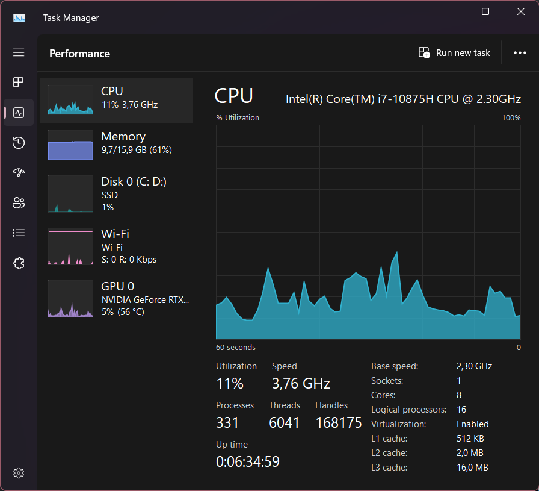
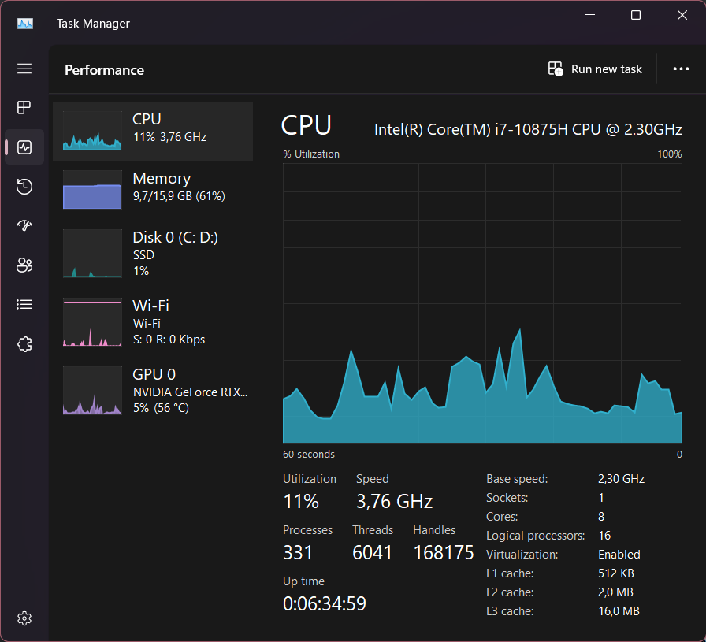
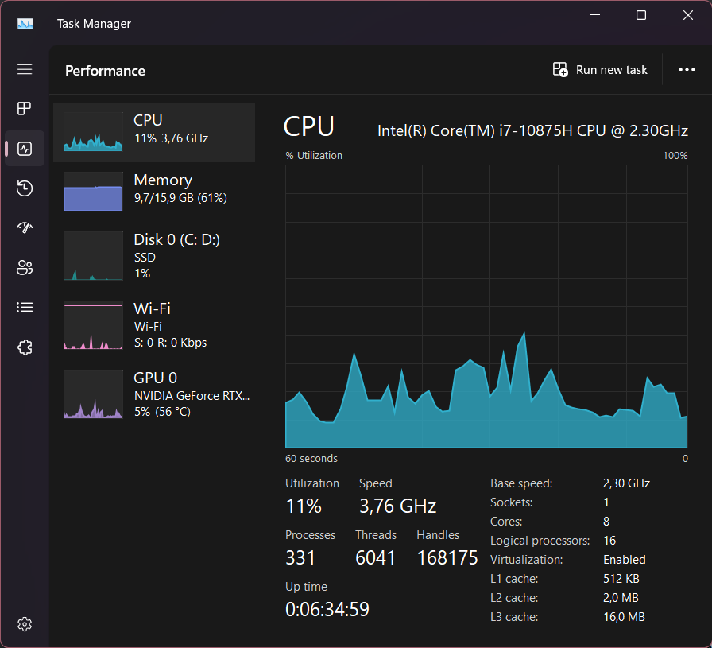

Monitorizare Resurse
 

Nume: Cosmin
Prenume: Alexandru
Date de contact: cosmin.alexandru1607@gmail.com
| Denumire | Producător | Parametrii |
|---|---|---|
| Razer Blade 15 Advanced Model (Early 2020) - RZ09-033 | Razer | - |
| NVIDIA GeForce RTX 2070 Super with Max-Q Design | NVIDIA | Nuclee CUDA: 2560 Frecvență de Bază: 1155 MHz Frecvență Boost: 1380 MHz Memorie Video: Tip: GDDR6 Capacitate: 8 GB Interfață: 256-bit Frecvență: 14000 MHz Lățime de Bandă: 448 GB/s Tehnologii Cheie: Ray Tracing Tensor Cores NVIDIA DLSS NVIDIA CUDA NVIDIA G-SYNC DirectX 12 OpenGL 4.6 Vulkan API NVIDIA Ansel, Highlights, Studio Drivers, GeForce Experience Conectivitate: DisplayPort 1.4a HDMI 2.0b USB Type-C (VirtualLink) Suport Afisare: Rezoluție maximă: 7680 x 4320 HDCP 2.2 Consum Energie (TDP): Aprox. 115 W Compatibilitate: DirectX 12, OpenGL 4.6 |
| Intel(R) Core(TM) i7-10875H CPU @ 2.30GHz | Intel | Numele Procesorului: Intel Core i7-10875H Număr de Nuclee: 8 Număr de Fire: 16 Frecvență de Bază: 2.30 GHz Frecvență Turbo Boost: Până la 5.10 GHz Cache L3: 16 MB Tehnologie de Producție: 14nm Consum de Energie (TDP): Aproximativ 45W Suport pentru Hyper-Threading: Da Suport pentru Virtualizare: Da Suport pentru Extensii de Securitate: Da (Intel VT-x, VT-d, AES-NI) GPU Integrat: Intel UHD Graphics |
| Intel(R) Wi-Fi 6 AX201 160MHz | Intel | Numele Plăcii Wi-Fi: Intel Wi-Fi 6 AX201 160MHz Standarde Wi-Fi Suportate: Wi-Fi 6 (802.11ax) Wi-Fi 5 (802.11ac) Wi-Fi 4 (802.11n) Lățime de Bandă: 160MHz (AX201) Viteze Maxime: Până la 2.4 Gbps (160MHz, Wi-Fi 6) Până la 574 Mbps (2.4 GHz, Wi-Fi 5) Până la 2400 Mbps (5 GHz, Wi-Fi 5) Număr de Antene: 2x2 (transmitere și recepție) Bluetooth Integrat: Da, versiunea 5.1 Securitate Wireless: WPA3 WPA2 WPA Tehnologii Adiționale: MU-MIMO (Multiple-Input Multiple-Output) OFDMA (Orthogonal Frequency Division Multiple Access) Beamforming Intel Wi-Fi Direct Intel Wireless Display (WiDi) |
Tip conexiune: Wi-Fi
Viteza conexiune: 740 Mbps
Adresa IP: 192.168.2.24
Gateway: 192.168.2.1
Tip rețea: Locală
Stare conexiune: Conectat
